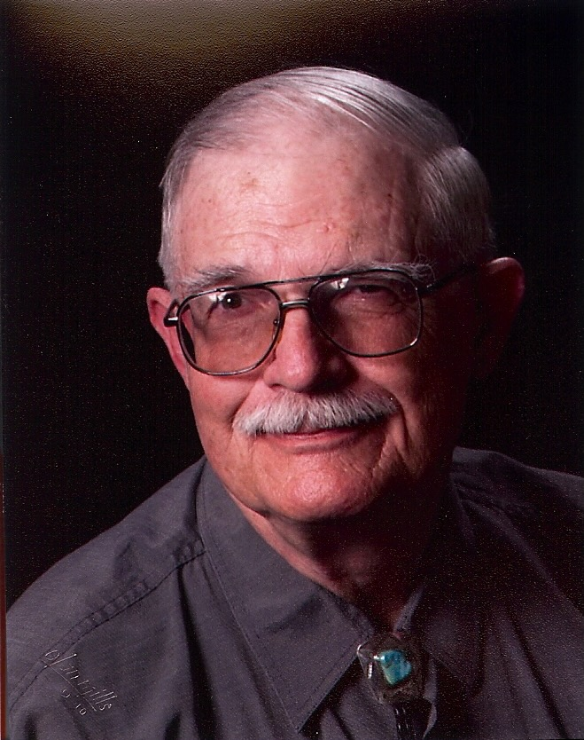

Reverand Theodore W. Cooley
New Mexico Background:
Sermons & Other Writings:
- Sermon: “What are Human Beings?” (2017)
- The Male Disciples and John (1991)
- Return to the Desert (1989)
- Meditation on the Crucifixion (1984)
- Thoughts on The Imitation of Christ (1984)
- Jeremiah Syndrome (1981)
- Chicken Little (1981)
- Christ’s Call -- A “Negative Way” to Life – published in The Disciple (March 1980)